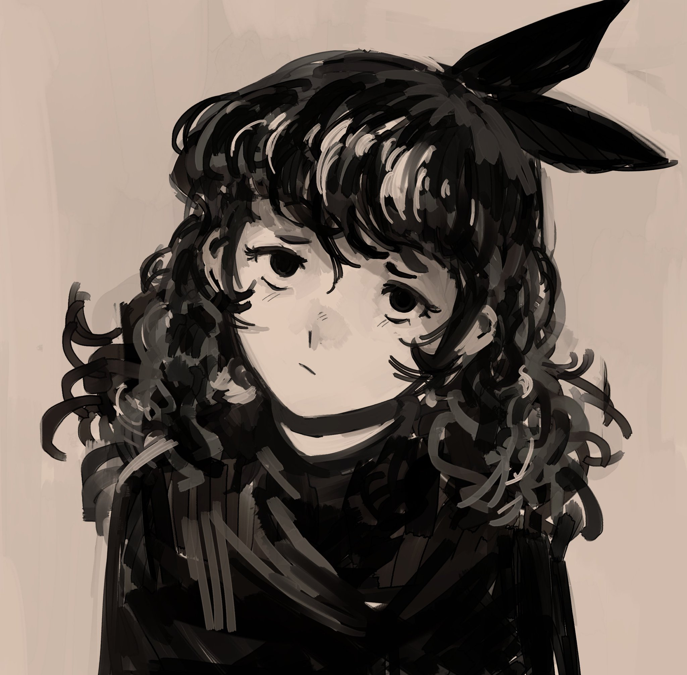

about
Eduardo "flootah" Saenz
most people call me Ed, or floot
a bio:
i eeked out a computer science degree (somehow) and now i write code for an oil company to keep the lights on. i play videogames and videoedit and (sometimes) draw and think about how i should improve myself in my free time.an expression:
this one is a person on their twenty-sixth version improvements to the spine, the soul, and the skin still acting as if nothing lies within they wrote in volition, and dreams, and empathy, and love they kept their mistakes, and the darkness thereof even with cowardice, resentment, carelessness, and hate we're still not sure what they really contemplate some things never change even when nothing's ever finished it's possible we'll get there_ if they had their all in it this website is up to keep them alive the art that they like keeps darkness deprived and music they play to keep them sincere helps them to remember the things they hold deara word:
i think art is a very special thing; illustrations, games, music, the whole lot.the people that create and ponder and judge and reimagine it are special too.
i hope to create something special, someday.
a way to find me:
email me whatever you like: ed@flootah.devtell me things: @flootah on discord or /id/flootah on steam
see the art i retweet: twimter
also on the blue one: bluski
watch me play videogames: yuutube
i'm "flootah" almost everywhere so just find me :]
flootah.dev is boxed in california and shipped by GitHub directly to your web browser.
its first iteration launched august 2016. (remember 2016??)
the latest iteration (which you're looking at now!) was designed in 2021.